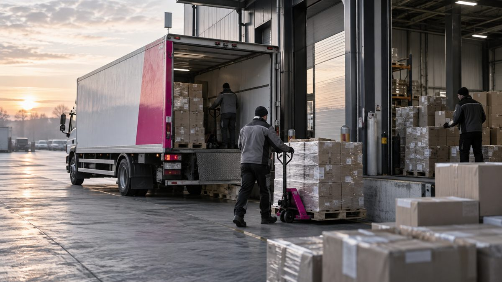
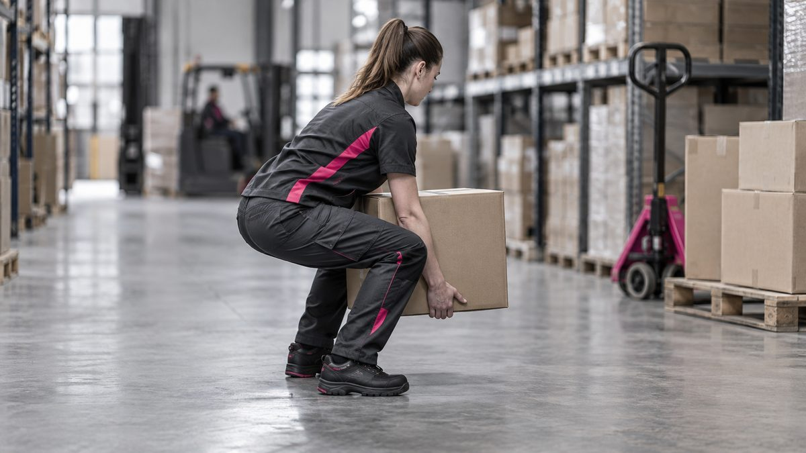
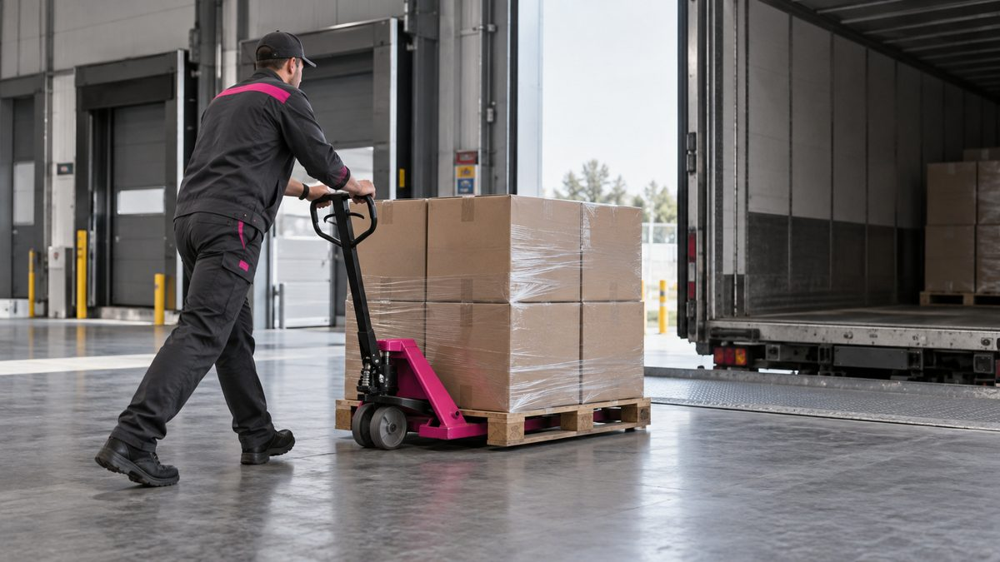
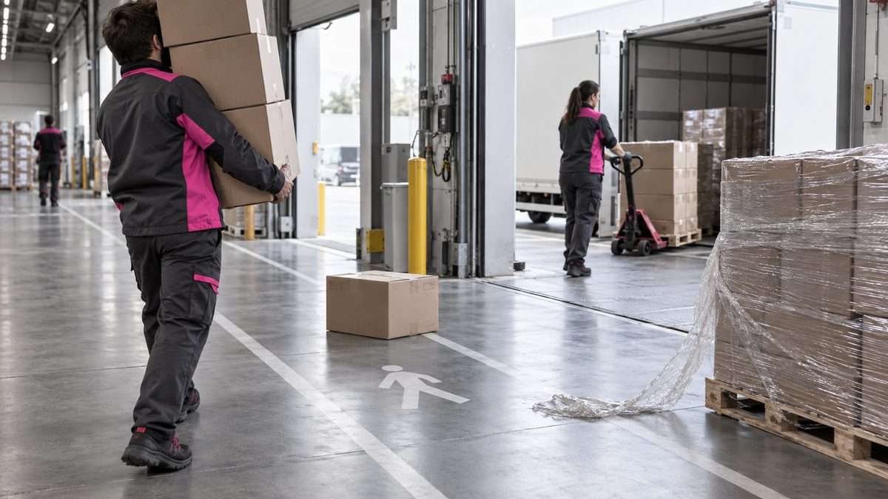
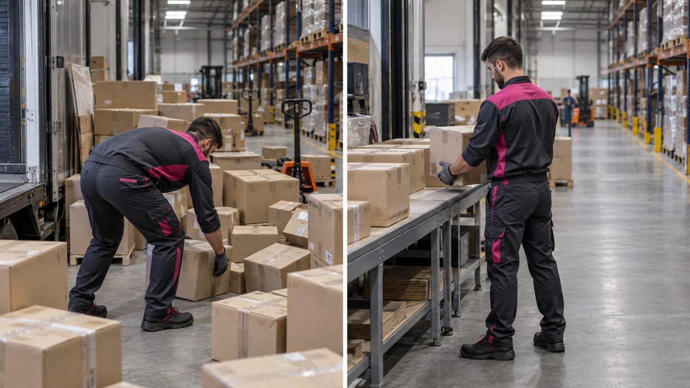
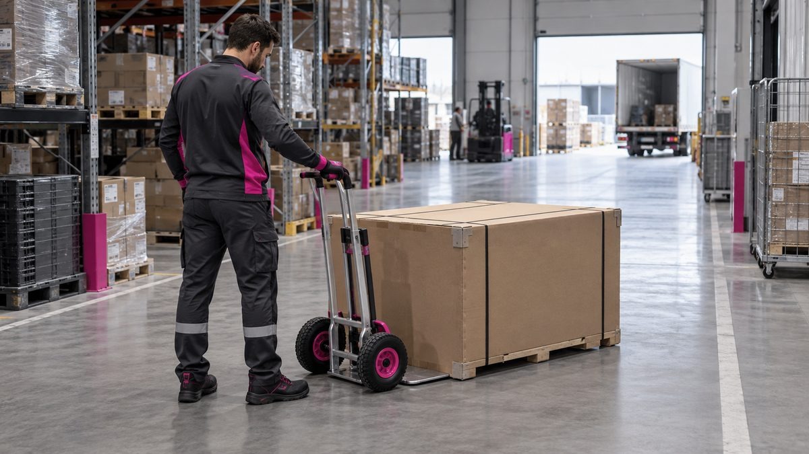
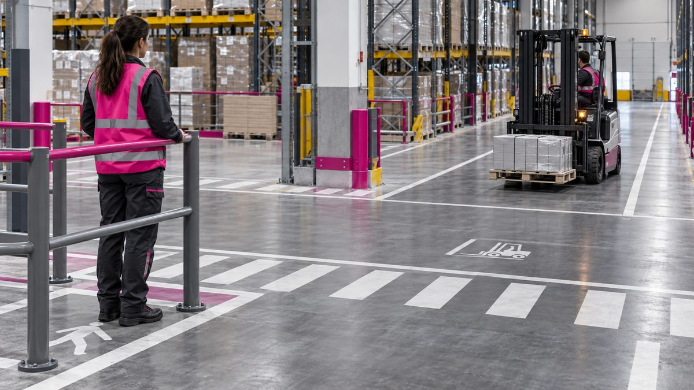
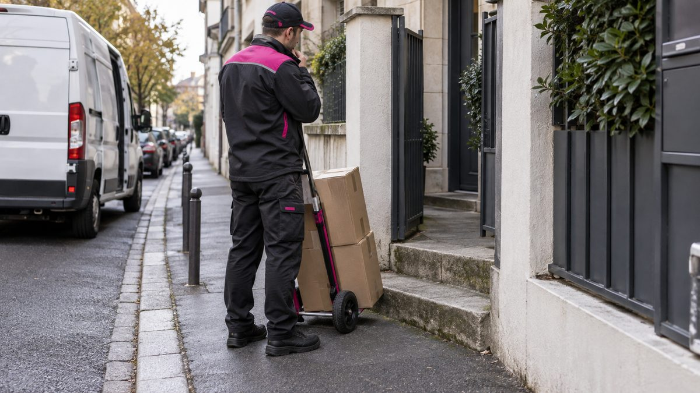
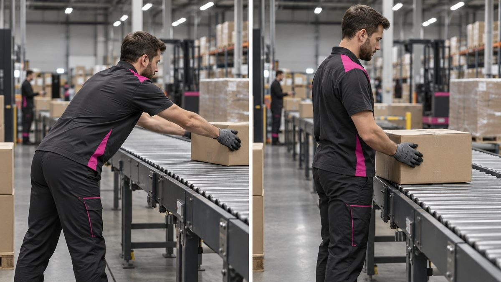

Prévenir les TMS au quai, au tri et en tournée
Démarche de prévention des risques liés à l'activité physique, inspirée des référentiels INRS — comprendre, adapter son geste, s'échauffer avant la prise de poste. Cette plateforme accompagne les 4 heures de la session et reste disponible ensuite, sur tous vos écrans.
Comprendre les TMS
Un trouble musculo-squelettique n'apparaît presque jamais d'un coup : c'est un dommage corporel différé, résultat d'une accumulation de microtraumatismes sur les tendons, muscles, nerfs et articulations. Le comprendre, c'est pouvoir agir en amont.
Le mécanisme d'apparition du dommage
Danger (charge, geste, cadence) → situation dangereuse (exposition répétée) → événement déclencheur → dommage. Le risque global s'exprime comme Risque = Probabilité × Gravité : deux leviers d'action existent toujours — réduire la fréquence d'exposition, ou réduire la gravité potentielle de chaque exposition.
Quatre familles de facteurs de risque
Le geste et la charge ne sont qu'une partie de l'équation. L'organisation du travail, le vécu psychosocial et l'environnement pèsent tout autant dans l'apparition et l'aggravation des TMS.
Biomécanique
Répétitivité des gestes, efforts excessifs, postures contraignantes, port de charges.
Organisationnel
Cadences de tri, chargement et livraison, pression horaire, variabilité de la charge de travail.
Psychosocial
Exigences de rythme, autonomie dans le geste, soutien collectif — facteur reconnu d'aggravation des TMS.
Environnemental
Coactivité avec engins et véhicules sur les voies de circulation quai ; horaires décalés / travail de nuit.
Le facteur environnemental mérite une vigilance à part : la coactivité avec chariots, transpalettes et poids lourds en manœuvre porte un risque de sévérité potentiellement supérieure au TMS (collision, écrasement), tout en partageant les mêmes situations de terrain — précipitation, charge mentale, fatigue.
Biomécanique appliquée
Pas un cours d'anatomie savante : quelques principes mécaniques simples, qui expliquent pourquoi certains gestes coûtent beaucoup plus cher au corps que d'autres, à charge identique.
À éviterLa combinaison la plus délétère
- Flexion du tronc + torsion du rachis en même temps (ex : attraper un colis au fond du véhicule en pivotant)
- Le disque intervertébral encaisse mal la torsion sous charge : situation la plus documentée comme génératrice de lombalgies et hernies
À privilégierLe réflexe qui change tout
- Pivoter avec les pieds, pas avec le dos : orienter le bassin avant de déplacer la charge
- Fléchir les genoux plutôt que le dos ; garder le dos gainé, proche de sa position naturelle
Morphologie et gabarit individuel
Chacun n'a ni la même taille, ni la même force, ni la même souplesse. Les repères ci-dessus sont des principes mécaniques universels — leur application (hauteur de prise, largeur d'appui, rythme) se règle sur son propre gabarit. Un poste ou un geste qui « passe » pour un collègue peut être en zone rouge pour un autre : c'est une information à faire remonter, pas une faiblesse à cacher.
Gestes & postures adaptés au quai
Application directe des principes du module 3 aux situations réelles de l'activité GEODIS D&E.
| Situation | Risque principal | Zone | Geste à privilégier |
|---|---|---|---|
| Réception / tri quai | Flexion-torsion répétée, cadence | Rouge | Pivoter les pieds, rapprocher le colis du corps avant de le soulever, fractionner les gros volumes |
| Chargement / déchargement colis-palettes | Port de charge, levier long | Orange | Prise à deux mains, charge collée au corps, jambes fléchies, dos gainé |
| Usage transpalette / diable | Efforts de poussée-traction, chocs | Orange | Pousser plutôt que tirer quand possible, corps engagé dans le mouvement, trajet dégagé |
| Tournée / livraison | Répétitivité, terrain varié, contrainte de temps | Orange | Anticiper le poids avant de saisir, adapter la prise selon le sol (trottoir, escalier) |
| Port de colis volumineux | Perte de visibilité, déséquilibre | Rouge | Fractionner si possible, dégager la ligne de vue, tester le poids avant de s'engager |
Galerie terrain — gestes de référence
Cinq situations types du quai à la tournée, avec le geste à privilégier illustré.

Quai de chargement
Vue d'ensemble d'un quai de messagerie : camion à quai, flux de palettes, circulation à dégager.

Zone vertePrise au sol
Dos droit, genoux fléchis, charge collée au corps : le geste de référence pour soulever un carton.

Zone orangeTranspalette
Corps engagé dans le mouvement, on pousse plutôt qu'on tire, trajet dégagé devant soi.
Zone rougeTri convoyeur
Prise proche du corps, rythme adapté à la cadence, éviter la torsion du buste en pivotant.
Zone rougeColis volumineux
Ligne de vue dégagée, poids testé avant de s'engager, fractionner si le colis le permet.
Étude de cas — repérer les risques
Six mises en situation à discuter en groupe : observer, expliquer, puis proposer une amélioration adaptée au travail réel.

1Repérer les risques
- Qu'observez-vous ? Quels éléments gênent le déplacement ou la visibilité ?
- Points visibles : carton dans l'allée, film au sol, pile masquant la vue.
- Quelles situations similaires rencontrez-vous sur votre site ?

2Organisation avant / après
- Qu'est-ce qui change entre les deux vues ?
- Quel effet sur les gestes et déplacements ?
- Quelle amélioration serait possible à votre poste ?

3Choisir une aide à la manutention
- Quelles informations manquent sur le colis : poids, stabilité, prises ?
- Le diable montré convient-il réellement à cette charge ? Quel autre matériel envisager ?

4Circulation piéton / engin
- Où sont les voies, les protections et les zones de visibilité ?
- Quelles règles de circulation s'appliquent sur votre site ?

5Livraison avec accès difficile
- Quels obstacles voyez-vous ?
- Quelles informations ou aides rechercher avant de poursuivre ?
- Quelles possibilités prévoit votre organisation pour ce type de livraison ?

6Distance de prise au convoyeur
- Quelles différences observez-vous dans la distance du carton et la position des bras ?
- Comment l'organisation du poste pourrait-elle faciliter la prise ?
Fiche métier — Transport / Logistique / Messagerie
Chauffeurs-livreurs, agents de quai et de tri, manutentionnaires : l'exposition combine port de charges répété, cadences de traitement, station debout prolongée, et coactivité avec les engins de manutention. Le risque n'est pas homogène : il varie fortement selon le poste tenu dans la chaîne.
Dos (lombaires)
Lombalgies, hernies discales — port de colis/palettes, flexion-torsion au tri
Épaule
Tendinopathies — gestes au-dessus de la ligne d'épaule, chargement en hauteur
Poignet
Canal carpien, tendinites — transpalette, gestes de saisie répétés
Genoux
Fatigue articulaire — station debout prolongée, 10-15 km/jour en logistique
| Équipement | Usage | Bénéfice TMS |
|---|---|---|
| Transpalette électrique | Déplacement de palettes lourdes | Supprime l'effort de traction manuelle |
| Diable / chariot pliant | Colis multiples, tournée | Réduit le port direct, répartit la charge |
| Ceinture lombaire de maintien | Port répété, usage ponctuel | Rappel proprioceptif de gainage (pas une protection à elle seule) |
| Rampe / hayon réglable | Chargement véhicule | Évite le port en hauteur ou en contrebas |
Réveil musculaire — la routine avant prise de poste
Quelques minutes avant de commencer, quel que soit l'horaire. Ce n'est pas un échauffement sportif de haut niveau : c'est mettre en route ce qui va être sollicité dans la première demi-heure.
Pourquoi ça compte réellement
- Pompes veineuses activées : meilleur retour sanguin dès les premiers efforts
- Système cardiaque et nerveux mis en route progressivement plutôt que sollicités à froid
- Unités motrices et proprioception réveillées : le corps « répond » mieux, on ressent mieux ses limites
- Préparation mentale : quelques minutes pour se mettre en condition, se recentrer — d'autant plus utile en horaires décalés ou de nuit
Pourquoi c'est renforcé à l'approche de l'hiver
Un muscle froid est moins extensible et moins réactif ; par température basse, les tissus tendino-musculaires encaissent moins bien un effort brusque. Sur une activité aussi intense que celle de GEODIS en période de forte charge (fin d'année), préparer son corps avant de l'exposer au froid et à l'effort devient un vrai levier de prévention des blessures, au-delà du seul TMS.
Mobilisation articulaire globale 1 min
Chevilles, genoux, hanches, épaules, nuque : quelques rotations douces, sans forcer l'amplitude.
Activation cardio-vasculaire légère 1-2 min
Marche sur place, talons-fesses légers : faire monter le rythme cardiaque progressivement.
Réveil du dos et du tronc 1-2 min
Enroulé-déroulé du dos, rotations de buste contrôlées (sans charge), gainage bref.
Activation spécifique membres sollicités 1-2 min
Épaules et poignets pour le port/saisie, jambes pour la station debout et la marche prolongée.
Temps de recentrage 30 s
Quelques respirations, se projeter dans la prise de poste : c'est le volet mental de la routine.
Auto-évaluation
10 questions pour vérifier ce qui est acquis. Chaque réponse s'accompagne d'une explication.
Calculateur de criticité (G × P)
Le même outil que celui utilisé sur les autres plateformes CONSULTEAM : estimez rapidement la criticité d'une situation à risque en croisant Gravité et Probabilité.
Au-delà de 12 : action prioritaire à engager sans délai. Entre 6 et 12 : à traiter, planifier une action. En dessous de 6 : vigilance courante.
Vidéothèque
Une sélection de ressources vidéo officielles INRS pour prolonger la session. Les liens ouvrent le site source dans un nouvel onglet.
TMS — Démarche de prévention
La page de référence INRS sur la démarche de prévention des troubles musculosquelettiques.
Voir sur inrs.fr →Napo dans… Allégez la charge !
Série d'animation INRS sur la prévention des risques liés à la manutention et au port de charges.
Voir sur inrs.fr →TMS — Logistique et les éléments de variabilité
Vidéo officielle INRS : comment la variabilité des situations de travail en logistique influe sur le risque TMS.
Voir sur YouTube →TMS — Logistique et les marges de manœuvre
Vidéo officielle INRS : les marges de manœuvre dont disposent les opérateurs logistiques pour adapter leur geste.
Voir sur YouTube →Ergo anatomie — playlist complète
28 vidéos sur l'anatomie fonctionnelle et les principes ergonomiques, en complément du module biomécanique.
Voir la playlist →TMS — Risques pour l'entreprise
Ressources Ameli à destination des entreprises sur les troubles musculosquelettiques.
Voir sur ameli.fr →Rapport de durabilité GEODIS 2024
Politique « Health & Safety with Heart » et indicateurs sécurité du groupe.
Voir sur geodis.com →Cadre réglementaire & sources
Textes de référence
- Code du travail, art. R4541-2 — obligation d'évaluer le risque lié à la manutention manuelle et de réduire le recours à celle-ci
- Art. R4541-8 — l'employeur met à disposition les aides mécaniques appropriées lorsque possible
- Art. R4541-9 — au-delà de 55 kg portés par un homme, l'aptitude médicale du médecin du travail est requise ; la limite réglementaire absolue est de 105 kg. Ce n'est pas un « maximum légal » fixé à 55 kg : c'est un seuil de vigilance médicale.
- Norme NF X35-109 — valeurs limites recommandées de port de charges pour limiter le risque
Sources chiffrées
- Cnam — données maladies professionnelles reconnues, 2024
- Ameli.fr — statistiques sectorielles transport et logistique
- GEODIS — rapport de durabilité 2024 (indicateurs groupe)
- INRS — méthodologie d'analyse de la charge physique de travail (démarche de référence de cette plateforme, hors habilitation PRAP)